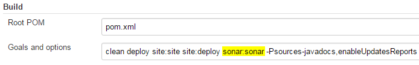

Quality Assurance, or QA for short, refers to planned and systematic production processes that provide confidence in a product's suitability for its intended purpose.
Instead of configuring the Maven Quality Assurance plugins, of which the output requires a lot of click around between those reports (see also screenshots) and the cross-reference, combine that information using SonarQube for better evaluation.
SonarQube is an open platform to manage code quality. As such, it covers the 7 axes of code quality.
Download SonarQube.
Setup and browsing SonarQube and Projects Drilling Down.Viewing Historical Information, Differential Views, Issues, Measures and Rules or Pre-commit Check with SonarLint.
Upgrade checklist:
Related products: -.
References: -.
Integration configuration changes: SonarQube - installation guide
SONARQUBE_HOME/sonar.properties, SonarQube - Temp folder issuetemp-wrapper, SonarQube - Rolling policy of log files, SonarQube - Database settingssonar.properties, SonarQube - Windows Servicewrapper.conf/Log Onand SonarQube - upgrading.Note
Or just run
p:\dev\apps\editor\winmerge\WinMergeU.exe p:\dev\apps\qa\sonarqube-5.5\conf p:\dev\apps\qa\sonarqube-5.3\confto copy the changes in for examplesonar.propertiesandwrapper.conf.Note
And with
p:\dev\apps\editor\winmerge\WinMergeU.exe p:\dev\apps\qa\sonarqube-5.5\extensions\plugins p:\dev\apps\qa\sonarqube-5.3\extensions\pluginscopy installed plugins such as for examplesonar-java-plugin-x.y.jar,sonar-scm-git-plugin-x.y.jar,sonar-scm-svn-plugin-x.y.jar,sonar-widget-lab-plugin-x.y.jarandsonar-dependency-check-plugin-x.y.z.jar. Check the Compatibility Matrix for plugins compatibility and manually upgrade the plugins if necessary.
SonarQube Products News, Roadmap, Documentation, Features, Quality Profiles, Blog, Plugin Library and Frequently Asked Questions (see also screenshots for example 5.4).
SonarQube Java Analyzer : The Only Rule Engine You Need.
Project Space which puts the focus on the Quality Gate and Leak Period concepts.
Water Leak Changes the Game for Technical Debt Management.
Web Service API to make it possible to implement a build-breaker strategy on any system.
SonarQube JavaScript plugin: why compete with JSLint and JSHint?
The Java Plugin enables analysis of Java projects. It offers more than 300 rules provided by SonarSource, which span coding conventions, bug detection, and security problems, including coverage of some CERT and CWE rules, including several from the SANS TOP 25 Most Dangerous Software Errors, as well as some OWASP Top Ten vulnerabilities. This plugin is CWE Compatible, which means that you can search for rules in the plugin that are related to CWE items.
The Open Web Application Security Project (OWASP) is a 501(c)(3) worldwide not-for-profit charitable organization focused on improving the security of software. Our mission is to make software security visible, so that individuals and organizations worldwide can make informed decisions about true software security risks.
The first goal of the OWASP SonarQube Project is to a create a referential of check specifications targeting OWASP vulnerabilities and that can be detected by SAST tools (Static Application Security Testing). From there, the second goal is to provide a reference implementations of most of those checks in the Open Source SonarQube language analyzers (Java, JavaScript, PHP and C#). The News is updated as soon as a SonarQube analyzers containing some stuff relating to this OWASP SonarQube project is released.
The Projects pages are constantly being updated. Some pages may contain outdated information. You can help OWASP to keep these pages current by visiting FixME:
OWASP Zed Attack Proxy (ZAP) is one of the world's most popular free security tools. It can help you automatically find security vulnerabilities in your web applications while you are developing and testing your applications. Its also a great tool for experienced pentesters to use for manual security testing.
OWASP Web Testing Environment (WTE), is a collection of application security tools and documentation available in multiple formats such as VMs, Linux distribution packages, Cloud-based installations and ISO images.
OWASP Offensive Web Testing Framework (OWTF) is a project focused on penetration testing efficiency and alignment of security tests to security standards like: The OWASP Testing Guide (v3 and v4), the OWASP Top 10, PTES and NIST.
Dependency-Check is a utility that identifies project dependencies and checks if there are any known, publicly disclosed, vulnerabilities. Currently Java, .NET, Ruby, Node.js, and Python projects are supported; additionally, limited support for C/C++ projects (see also Section 16.1.7.8, “OWASP Dependency Check” and Section 17.2.4.1, “Update Center”).
OWASP Testing Project and Testing Guide v4.
OWASP Cheat Sheet Series was created to provide a concise collection of high value information on specific web application security topics. These cheat sheets were created by various application security professionals who have expertise in specific topics.
Download the
archive: sonarqube-5.5.zip [version 5.5].
Important
Better skip version 5.4 because of reverse proxy issue with SONAR-7122 Drop the ability to customize the web app context and wait for 5.5 (SONAR-7494 Reintroduce the web app context) and hope they don't do it again in 6.x.
Alternatively create a subdomain sonarqube.freedumbytes.dev.net and redirect freedumbytes.dev.net/sonarqube there (see also Section 7.1.9.1.1.1, “Subdomain sample”). But this subdomain will required extra login.
Extract this .zip file to
P:\dev\apps\qa.
Press  +Break keys to open the Windows System Properties. Select
→ and add a
system variable
+Break keys to open the Windows System Properties. Select
→ and add a
system variable SONARQUBE_HOME pointing to
P:\dev\apps\qa\sonarqube-5.5
Change the context  , the
listening port
, the
listening port  and restricted to
localhost
and restricted to
localhost  by editing the
configuration file
by editing the
configuration file
P:\dev\apps\qa\sonarqube-5.5\conf\sonar.properties:
#------------------------------------------------------------------------------
# WEB SERVER
# Web server is executed in a dedicated Java process.
# By default heap size is 768Mb.
# Use the following property to customize JVM options.
# Recommendations:
#
# The HotSpot Server VM is recommended. The property -server should be added
# if server mode is not enabled by default on your environment:
# http://docs.oracle.com/javase/7/docs/technotes/guides/vm/server-class.html
#
#sonar.web.javaOpts=-Xmx512m -Xms128m -XX:MaxPermSize=160m ^
# -XX:+HeapDumpOnOutOfMemoryError -Djava.net.preferIPv4Stack=true
sonar.web.javaOpts=-Xmx512m -XX:+HeapDumpOnOutOfMemoryError -server …
# Binding IP address. For servers with more than one IP address, this property
# specifies which address will be used for listening on the specified ports.
# By default, ports will be used on all IP addresses associated with the server.
sonar.web.host=127.0.0.1
# Web context. When set, it must start with forward slash
# (for example /sonarqube).
# The default value is root context (empty value).
sonar.web.context=/sonarqube
# TCP port for incoming HTTP connections. Disabled when value is -1.
sonar.web.port=8072
…
# COMPUTE ENGINE
# The Compute Engine is responsible for processing background tasks.
#sonar.ce.javaOpts=-Xmx512m -Xms128m -XX:MaxPermSize=160m ^
# -XX:+HeapDumpOnOutOfMemoryError -Djava.net.preferIPv4Stack=true
sonar.web.javaOpts=-Xmx512m -XX:+HeapDumpOnOutOfMemoryError -server
…
# Binding IP address. For servers with more than one IP address, this property
# specifies which address will be used for listening on the specified ports.
# By default, ports will be used on all IP addresses associated with the server.
sonar.web.host=127.0.0.1
# Web context. When set, it must start with forward slash
# (for example /sonarqube).
# The default value is root context (empty value).
sonar.web.context=/sonarqube
# TCP port for incoming HTTP connections. Disabled when value is -1.
sonar.web.port=8072
…
# COMPUTE ENGINE
# The Compute Engine is responsible for processing background tasks.
#sonar.ce.javaOpts=-Xmx512m -Xms128m -XX:MaxPermSize=160m ^
# -XX:+HeapDumpOnOutOfMemoryError -Djava.net.preferIPv4Stack=true
sonar.web.javaOpts=-Xmx512m -XX:+HeapDumpOnOutOfMemoryError -server # Same as previous property,
# but allows to not repeat all other settings like -Xmx
#sonar.ce.javaAdditionalOpts=
# The number of workers in the Compute Engine.
# Value must be greater than zero.
# By default the Compute Engine uses a single worker
# and therefore processes tasks one at a time.
#sonar.ce.workerCount=1
…
# ELASTICSEARCH
# Elasticsearch is used to facilitate fast and accurate information retrieval.
#sonar.search.javaOpts=-Xmx1G -Xms256m -Xss256k -Djava.net.preferIPv4Stack=true \
# -XX:+UseParNewGC -XX:+UseConcMarkSweepGC -XX:CMSInitiatingOccupancyFraction=75 \
# -XX:+UseCMSInitiatingOccupancyOnly -XX:+HeapDumpOnOutOfMemoryError
sonar.search.javaOpts=-Xmx1G -Xms256m -Xss256k \
-XX:+UseParNewGC -XX:+UseConcMarkSweepGC -XX:CMSInitiatingOccupancyFraction=75 \
-XX:+UseCMSInitiatingOccupancyOnly -XX:+HeapDumpOnOutOfMemoryError -server
# Same as previous property,
# but allows to not repeat all other settings like -Xmx
#sonar.ce.javaAdditionalOpts=
# The number of workers in the Compute Engine.
# Value must be greater than zero.
# By default the Compute Engine uses a single worker
# and therefore processes tasks one at a time.
#sonar.ce.workerCount=1
…
# ELASTICSEARCH
# Elasticsearch is used to facilitate fast and accurate information retrieval.
#sonar.search.javaOpts=-Xmx1G -Xms256m -Xss256k -Djava.net.preferIPv4Stack=true \
# -XX:+UseParNewGC -XX:+UseConcMarkSweepGC -XX:CMSInitiatingOccupancyFraction=75 \
# -XX:+UseCMSInitiatingOccupancyOnly -XX:+HeapDumpOnOutOfMemoryError
sonar.search.javaOpts=-Xmx1G -Xms256m -Xss256k \
-XX:+UseParNewGC -XX:+UseConcMarkSweepGC -XX:CMSInitiatingOccupancyFraction=75 \
-XX:+UseCMSInitiatingOccupancyOnly -XX:+HeapDumpOnOutOfMemoryError -server # Same as previous property, but allows to not repeat all other settings like -Xmx
#sonar.search.javaAdditionalOpts=
# Elasticsearch port. Default is 9001. Use 0 to get a free port.
# As a security precaution, should be blocked by a firewall
# and not exposed to the Internet.
#sonar.search.port=9001
sonar.search.port=8073
# Elasticsearch host. The search server will bind this address
# and the search client will connect to it.
# Default is 127.0.0.1.
# As a security precaution,
# should NOT be set to a publicly available address.
#sonar.search.host=127.0.0.1
# Same as previous property, but allows to not repeat all other settings like -Xmx
#sonar.search.javaAdditionalOpts=
# Elasticsearch port. Default is 9001. Use 0 to get a free port.
# As a security precaution, should be blocked by a firewall
# and not exposed to the Internet.
#sonar.search.port=9001
sonar.search.port=8073
# Elasticsearch host. The search server will bind this address
# and the search client will connect to it.
# Default is 127.0.0.1.
# As a security precaution,
# should NOT be set to a publicly available address.
#sonar.search.host=127.0.0.1
When running the Java Service Wrapper as a
Local System account the
following error occurs “WrapperSimpleApp: Encountered an error
running main: java.lang.IllegalStateException: Temp directory is not
writable:
C:\Windows\system32\config\systemprofile\AppData\Local\Temp\”.
To prevent this use This account
to Log On (see also Section 17.2.6, “Windows service”) and edit
the following entry in
the service wrapper configuration file
P:\dev\apps\qa\sonarqube-5.5\conf\wrapper.conf:
#********************************************************************
# Wrapper Java
#********************************************************************
wrapper.java.additional.1=-Djava.awt.headless=true
wrapper.java.additional.2=-Djava.io.tmpdir=%SONARQUBE_HOME%\temp-wrapper
wrapper.java.mainclass=org.tanukisoftware.wrapper.WrapperSimpleApp
Don't forget to create it: mkdir
%SONARQUBE_HOME%\temp-wrapper.
Enable the rolling policy and max number of files by editing the configuration file
P:\dev\apps\qa\sonarqube-5.5\conf\sonar.properties:
#--------------------------------------------------------------------------------
# LOGGING
# Level of logs. Supported values are INFO(default), DEBUG and TRACE
# (DEBUG + SQL + ES requests)
#sonar.log.level=INFO
# Path to log files. Can be absolute or relative to installation directory.
# Default is <installation home>/logs
#sonar.path.logs=logs
# Rolling policy of log files
# - based on time if value starts with "time:",
# for example by day ("time:yyyy-MM-dd")
# or by month ("time:yyyy-MM")
# - based on size if value starts with "size:", for example "size:10MB"
# - disabled if value is "none".
# That needs logs to be managed by an external system like logrotate.
sonar.log.rollingPolicy=time:yyyy-MM-dd
# Maximum number of files to keep if a rolling policy is enabled.
# - maximum value is 20 on size rolling policy
# - unlimited on time rolling policy. Set to zero to disable old file purging.
sonar.log.maxFiles=7
Create a MySQL user called sonarqube-user and database called sonarqube with the following commands:
mysql -u root -p
mysql> create database sonarqube character set utf8mb4 collate utf8mb4_unicode_ci;
mysql> grant select, insert, update, delete, create, drop, alter, index on sonarqube.*
-> to 'sonarqube-user'@'localhost' identified by 'password';
mysql> flush privileges;
mysql> select host,user from mysql.user;
mysql> select host,db,user from mysql.db;
mysql> select * from information_schema.schemata where schema_name = 'sonarqube';
mysql> quit
Configure the SonarQube application server to connect to MySQL
(instead of using the H2 embedded database) -
with url jdbc:mysql://localhost:3306/sonarqube? useUnicode=true
&characterEncoding=utf8 &rewriteBatchedStatements=true
&useConfigs=maxPerformance by editing the configuration
file
P:\dev\apps\qa\sonarqube-5.5\conf\sonar.properties:
#---------------------------------------------------------------------------
# DATABASE
…
# User credentials.
# Permissions to create tables, indices and triggers must be granted
# to JDBC user.
# The schema must be created first.
sonar.jdbc.username=sonarqube-user
sonar.jdbc.password=password
…
#----- Embedded Database (default)
# H2 embedded database server listening port, defaults to 9092
#sonar.embeddedDatabase.port=9092
…
#----- MySQL 5.x
# Only InnoDB storage engine is supported (not myISAM).
# Only the bundled driver is supported. It can not be changed.
sonar.jdbc.url=jdbc:mysql://localhost:3306/sonarqube?… (see jdbc url above)
…
#----- Connection pool settings
# The maximum number of active connections that can be allocated
# at the same time, or negative for no limit.
# The recommended value is 1.2 * max sizes of HTTP pools.
# For example if HTTP ports are enabled with default sizes
# (50, see property sonar.web.http.maxThreads)
# and sonar.web.https.maxThreads) then sonar.jdbc.maxActive
# should be 1.2 * (50) = 60.
sonar.jdbc.maxActive=60
# The maximum number of connections that can remain idle in the
# pool, without extra ones being released, or negative for no limit.
sonar.jdbc.maxIdle=5
# The minimum number of connections that can remain idle in the pool,
# without extra ones being created, or zero to create none.
sonar.jdbc.minIdle=2
# The maximum number of milliseconds that the pool will wait (when there
# are no available connections) for a connection to be returned before
# throwing an exception, or <= 0 to wait indefinitely.
sonar.jdbc.maxWait=5000
#sonar.jdbc.minEvictableIdleTimeMillis=600000
#sonar.jdbc.timeBetweenEvictionRunsMillis=30000
Important
Don't forget to comment the lines and to deactivate the
default embedded database settings. Drivers for the supported
databases (except Oracle) are already provided (see also
P:\dev\apps\qa\sonarqube-5.5\lib\jdbc\mysql).
Do not replace the provided drivers; because they are the only
ones supported.
After starting SonarQube with
%SONARQUBE_HOME%\bin\windows-x86-64\StartSonar.bat
or as Windows service browse to http://localhost:8072/sonarqube/setup
or http://freedumbytes.dev.net/sonarqube/setup
to upgrade the database (see also Upgrade
guide).
Also browse to the Update Center at http://freedumbytes.dev.net/sonarqube/updatecenter/installed because of the following errors that might occur after upgrading:
“[ERROR] Failed to execute goal org.sonarsource.scanner.maven:sonar-maven-plugin:3.0:sonar …: No quality profiles have been found, you probably don't have any language plugin installed.” when the Java Plugin is not installed.
“[ERROR] Failed to execute goal org.sonarsource.scanner.maven:sonar-maven-plugin:3.0:sonar …: Unable to register extension org.sonar.plugins.java.JavaSquidSensor: Lorg/sonar/api/checks/NoSonarFilter;: org.sonar.api.checks.NoSonarFilter” when the installed Java Plugin is too old.
Verify the installation by running
%SONARQUBE_HOME%\bin\windows-x86-64\StartSonar.bat.
Verify that the server is running in your browser at http://localhost:8072/sonarqube
or in case of subdomain usage http://localhost:8072. Click
as admin with
password admin. Click → to .
After logging in as admin select → → → and for example select the following plugins from the SonarQube Plugin Library:
By default the Java plugin is provided with SonarQube. You can upgrade it from the Update Center or download the latest release from this page.
The same holds true for SVN Plugin and Git Plugin.
Widget Lab Plugin adds a Measure history bar chart and improves number formatting in security tag widgets.
Timeline Plugin displays metric history in a widget that uses the Google Visualization Annotated TimeLine component (requires internet access).
Motion Chart Plugin offers two widgets that display the evolution over time of four predefined metrics (two axes + bubble color + bubble size) (requires internet access).
Or drop other
plugins (that are not available in the Update Center) or an
external plugin (from for example excentia)
just in P:\dev\apps\qa\sonarqube-5.5\extensions\plugins:
OWASP Dependency Check Plugin (download) integrates OWASP Dependency Check reports into SonarQube.
3D Code Metrics is a SonarQube extension which allows the visual representation of a software project in 3D in order to detect anomalies.
Restart SonarQube.
Select → → and configure:
General:
Server base URL:
http://freedumbytes.dev.net/sonarqubeand .
Email:
SMTP host:
mail.freedumbytes.dev.net.SMTP port:
25.Use secure connection: No.
From address:
sonarqube.noreply@.company.orgEmail prefix:
[SONARQUBE]and .
Enable support of gravatars: False.
Logo URL:
http://freedumbytes.dev.net/mvn-sites/maven-setup/images/logos/shadowrun.png.Width of image in pixels:
110and .
To enable connecting from Eclipse with SonarLint select → → and :
Login:
jjasper.Name:
Jene Jasper.Email:
jjasper@company.orgPassword:
password
The Quality Gates page is the place to define your requirements on projects. Select → and configure:
When upgrading there might be no default set. In that case click when for example SonarQube way is selected.
condition New Blocker issues.
And replace it with : Blocker issues with Value that is greater than Errror Threshold
0.
In case of the following error “org.sonar.api.utils.MessageException: Validation of project failed: o Module "net.dev.freedumbytes.manual.maven:java-se-3-base-pom" is already part of project "net.dev.freedumbytes.manual.maven:setup"” when it is for example moved to another project:
causing the background task to fail:
To fix this issue just rename the old module key:
Instruct Apache to proxy all URLs whose path
portions begin with /sonarqube/ using the following
P:\dev\apps\httpserver\apache-conf\httpd-vhosts.conf
include :
<VirtualHost *:80>
…
<IfModule proxy_module>
<IfModule proxy_http_module>
…
<Proxy *>
…
</Proxy>
# SonarQube
Include ../apache-conf/httpd-sonarqube.conf
</IfModule>
</IfModule>
</VirtualHost>
with the following content in
P:\dev\apps\httpserver\apache-conf\httpd-sonarqube.conf:
<IfModule proxy_module>
<IfModule proxy_http_module>
ProxyPass /sonarqube http://localhost:8072/sonarqube
ProxyPassReverse /sonarqube http://localhost:8072/sonarqube
<Location /sonarqube>
Include ../apache-conf/httpd-freedumbytes-realm.conf
</Location>
</IfModule>
</IfModule>
Because since version 5.2 the server is in charge to process
reports submitted by batch analysis, allow anonymous access from the
local area network to the
following URIs in
P:\dev\apps\httpserver\apache-conf\httpd-sonarqube.conf:
<IfModule proxy_module>
<IfModule proxy_http_module>
…
<Location /sonarqube>
Include ../apache-conf/httpd-freedumbytes-realm.conf
</Location>
<Location /sonarqube/batch_bootstrap/>
<RequireAll>
Include ../apache-conf/httpd-lan-access.conf
</RequireAll>
</Location>
<Location /sonarqube/batch/>
<RequireAll>
Include ../apache-conf/httpd-lan-access.conf
</RequireAll>
</Location>
<Location /sonarqube/deploy/plugins/>
<RequireAll>
Include ../apache-conf/httpd-lan-access.conf
</RequireAll>
</Location>
<Location /sonarqube/api/>
<RequireAll>
Include ../apache-conf/httpd-lan-access.conf
</RequireAll>
</Location>
To monitor the queue of pending reports to process and the history of past analysis select → → .
When the Apache HTTP Server is restarted you should be able to browse SonarQube at http://freedumbytes.dev.net/sonarqube.
To restart automatically on Microsoft Windows, create a Windows service. Use the Tanuki Java Service Wrapper shipped with SonarQube.
Optionally edit the following entries - in the service wrapper configuration
file
P:\dev\apps\qa\sonarqube-5.5\conf\wrapper.conf:
# Path to JVM executable. By default it must be available in PATH.
# Can be an absolute path, for example:
#wrapper.java.command=/path/to/my/jdk/bin/java
wrapper.java.command=P:\dev\apps\prg\java-x64\jdk1.8.0_74\bin\java
…
#********************************************************************
# Wrapper Java
#********************************************************************
wrapper.java.additional.1=-Djava.awt.headless=true
wrapper.java.additional.2=-Djava.io.tmpdir=%SONARQUBE_HOME%\temp-wrapper
(see above Section 17.2.2.1, “Temp folder issue”)
wrapper.java.mainclass=org.tanukisoftware.wrapper.WrapperSimpleApp
…
#********************************************************************
# Wrapper Windows Properties
#********************************************************************
# Title to use when running as a console
wrapper.console.title=SonarQubefreedumbytes.dev.net SonarQube
…
#********************************************************************
# Wrapper Windows NT/2000/XP Service Properties
#********************************************************************
# WARNING - Do not modify any of these properties when an application
# using this configuration file has been installed as a service.
# Please uninstall the service before modifying this section. The
# service can then be reinstalled.
# Name of the service
wrapper.ntservice.name=SonarQubesonarqube
# Display name of the service
wrapper.ntservice.displayname=freedumbytes.dev.net SonarQube
# Description of the service
wrapper.ntservice.description=SonarQube is an open source quality management platform.
Register the SonarQube service with the command in an elevated command
processor:
%SONARQUBE_HOME%\bin\windows-x86-64\InstallNTService.bat.
Start SonarQube with net start sonarqube.
Note
In case of an upgrade sc delete sonarqube
first (see also Section 1.1.5, “Task Manager replacement” in
case of “The specified service has been marked for
deletion.”).
Important
In case of a new jdk installation use an elevated command prompt
just run net stop sonarqube and net
start sonarqube. Verify the upgrade at http://freedumbytes.dev.net/sonarqube/system.
For the same reason as Section 8.1.3.1, “Log On Windows user” launch the Service
Management Console with
services.msc. Right click on
freedumbytes.dev.net SonarQube and select
→ Log On to use This
account .\Tomcat. After password
conformation click and
restart the service.
Configure Maven Setup project in
C:\dev\projects\maven-setup\pom.xml to enable
command line action mvn sonar:sonar. The SonarQube
Maven Plugin triggers the code analyzers using Analysis
Parameters and the SonarQube
Maven Report Plugin adds a report link to the Maven site, that
redirects to the project dashboard in SonarQube (see also Section 17.2.5, “Apache configuration” about allowing anonymous access to
SonarQube for the batch analysis to submit the process
reports):
<properties>
<devHost>http://freedumbytes.dev.net</devHost>
…
<nexusHost>http://freedumbytes.dev.net/nexus</nexusHost>
+ <sonarHost>http://freedumbytes.dev.net/sonarqube</sonarHost>
+
+ <sonar.host.url>${sonarHost}</sonar.host.url>
+ <sonar.jacoco.reportPath>
+ ${coverageReportsPathUnit}
+ </sonar.jacoco.reportPath>
+ <sonar.jacoco.itReportPath>
+ ${coverageReportsPathIntegration}
+ </sonar.jacoco.itReportPath>
+ <sonar.dependencyCheck.reportPath>
+ ${project.build.directory}/dependency-check-report.xml
+ </sonar.dependencyCheck.reportPath>
+ <sonar.sourceEncoding>UTF-8</sonar.sourceEncoding>
…
<mavenProjectInfoReportsPluginVersion>
2.8.1
</mavenProjectInfoReportsPluginVersion>
+ <sonarMavenPluginVersion>2.7.1</sonarMavenPluginVersion>
+ <mavenSonarReportPluginVersion>0.1</mavenSonarReportPluginVersion>
<wagonMavenPluginVersion>1.0</wagonMavenPluginVersion>
<wagonFtpVersion>2.10</wagonFtpVersion>
<wagonWebdavJackrabbitVersion>2.10</wagonWebdavJackrabbitVersion>
</properties>
<plugin>
<groupId>org.apache.maven.plugins</groupId>
<artifactId>maven-site-plugin</artifactId>
<version>${mavenSitePluginVersion}</version>
…
</plugin>
+
+ <plugin>
+ <groupId>org.codehaus.mojo</groupId>
+ <artifactId>sonar-maven-plugin</artifactId>
+ <version>${sonarMavenPluginVersion}</version>
+ </plugin>
</plugins>
</pluginManagement>
+ <plugin>
+ <groupId>org.codehaus.sonar-plugins</groupId>
+ <artifactId>maven-report</artifactId>
+ <version>${mavenReportSonarPluginVersion}</version>
+ <configuration>
+ <sonarHostURL>${sonarHost}</sonarHostURL>
+ </configuration>
+ </plugin>
</plugins>
</reporting>
</project>
Update the site
descriptor in
C:\dev\projects\maven-setup\src\site\site.xml:
<menu name="Free Dumb Bytes" inherit="top">
…
<item name="Nexus" href="${nexusHost}" />
+ <item name="SonarQube" href="${sonarHost}" />
It is no longer recommended to use SonarQube maven builder. It is preferable to set up SonarQube in the build environment and use a standard Jenkins maven target:

To get an idea of the difference between the Quality Assurance reports of Maven and SonarQube take a look at the following screenshots:

The purpose of the jDocBook
Plugin is to allow the DocBook
transformations to occur as a natural part of the users Maven build. It
is used to create this documentation from the
master.xml (for more resources see also Section 5.1, “DocBook”).
Lets setup a base configuration, for Maven Docbooks to come, with the following JIRA project:
Maven Docbook [MVNDBK]: Maven DocBook configuration (see also repository branches/maven-docbook).
With the following components:
docbook: Common setup for all DocBook documentation.
example: Pressgang Tools example.
and versions:
3.0-alpha - HTML and PDF generation with Pressgang Tools example.
Start a new bare Git repository maven-docbook by
calling /p/dev/apps/windows/batch/git-create-repo.sh
/p/dev/data/repo/git maven-docbook.git "Maven docbook configuration"
-jenkinsHook in  Git
Bash.
Git
Bash.
Clone this remote repository with the following command
git-clone
jjasper maven-docbook.
Start out with the Look and Feel of the PressGang, which is the centralized hub JBoss projects can use to get assistance with documentation. If you have any questions about writing professional open source documentation using DocBook XML, you've come to the right place to have them answered.
Create the maven-docbook initial settings POM in C:\dev\projects\maven-docbook\pom.xml:
+<?xml version="1.0" encoding="UTF-8"?>
+
+<project xmlns="http://maven.apache.org/POM/4.0.0"
+ xmlns:xsi="http://www.w3.org/2001/XMLSchema-instance"
+ xsi:schemaLocation="http://maven.apache.org/POM/4.0.0
+ http://maven.apache.org/maven-v4_0_0.xsd">
+ <modelVersion>4.0.0</modelVersion>
+
+ <parent>
+ <groupId>net.dev.freedumbytes.maven</groupId>
+ <artifactId>base-pom</artifactId>
+ <version>3.1-beta</version>
+ </parent>
+
+ <groupId>net.dev.freedumbytes.documentation</groupId>
+ <artifactId>docbook</artifactId>
+ <version>3.0-alpha</version>
+ <packaging>pom</packaging>
+
+ <name>Free Dumb Bytes DocBook Documentation</name>
+ <description>
+ Common setup for all Free Dumb Bytes DocBook documentation.
+ </description>
+ <url>${mavenHost}/maven-docbook</url>
+ <inceptionYear>2010</inceptionYear>
+ <scm>
+ <developerConnection>
+ scm:git:${gitHost}/maven-docbook.git
+ </developerConnection>
+ <url>${fisheyeHost}/browse/maven-docbook</url>
+ <tag>HEAD</tag>
+ </scm>
+ <ciManagement>
+ <system>Jenkins</system>
+ <url>${jenkinsHost}/job/maven-docbook</url>
+ </ciManagement>
+ <issueManagement>
+ <system>JIRA</system>
+ <url>${jiraHost}/projects/MVNDBK</url>
+ </issueManagement>
+ <distributionManagement>
+ <site>
+ <id>mvn-sites</id>
+ <name>Maven Documentation Sites</name>
+ <url>dav:${mavenHost}/maven-docbook</url>
+ </site>
+ </distributionManagement>
+ <properties>
+ <translation>en-US</translation>
+ </properties>
+ <build>
+ <plugins>
+ <plugin>
+ <groupId>org.jboss.maven.plugins</groupId>
+ <artifactId>maven-jdocbook-plugin</artifactId>
+ <version>2.3.9</version>
+ <extensions>true</extensions>
+ <dependencies>
+ <dependency>
+ <groupId>org.jboss.pressgang</groupId>
+ <artifactId>pressgang-jdocbook-style</artifactId>
+ <type>jdocbook-style</type>
+ <version>3.1.3</version>
+ </dependency>
+ <dependency>
+ <groupId>org.jboss.pressgang</groupId>
+ <artifactId>pressgang-xslt-ns</artifactId>
+ <version>3.1.3</version>
+ </dependency>
+ </dependencies>
+ <configuration>
+ <sourceDirectory>${project.basedir}/src/docbook</sourceDirectory>
+ <sourceDocumentName>master.xml</sourceDocumentName>
+ <masterTranslation>${translation}</masterTranslation>
+ <imageResource>
+ <directory>${project.basedir}/src/docbook/${translation}</directory>
+ <includes>
+ <include>**/*.svg</include>
+ <include>**/*.png</include>
+ <include>**/*.jpg</include>
+ <include>**/*.gif</include>
+ <include>**/*.bmp</include>
+ </includes>
+ </imageResource>
+ <cssResource>
+ <directory>${project.basedir}/src/docbook/${translation}</directory>
+ <includes>
+ <include>**/*.css</include>
+ </includes>
+ </cssResource>
+ <formats>
+ <format>
+ <formatName>html</formatName>
+ <stylesheetResource>
+ classpath:/xslt/org/jboss/pressgang/xhtml.xsl
+ </stylesheetResource>
+ <finalName>index.html</finalName>
+ </format>
+ <format>
+ <formatName>pdf</formatName>
+ <stylesheetResource>
+ classpath:/xslt/org/jboss/pressgang/pdf.xsl
+ </stylesheetResource>
+ <finalName>${project.artifactId}-${translation}.pdf</finalName>
+ </format>
+ </formats>
+ <options>
+ <xmlTransformerType>saxon</xmlTransformerType>
+ <xincludeSupported>true</xincludeSupported>
+ <useRelativeImageUris>true</useRelativeImageUris>
+ </options>
+ </configuration>
+ </plugin>
+ </plugins>
+ </build>
+</project>
In Eclipse create a Working Set Maven
Docbook and import this Maven Docbook project into it with
File → Import… → Maven → Existing Maven Projects from Root
directory
C:\dev\projects\maven-docbook and click
.
With this setup the Development Production Line manual would look something like this:
Important
When building a jDocBook using maven in combination with java.home pointing to a jdk1.7 the following error occured: “Failure reading http://docbook.sourceforge.net/release/xsl/1.76.1/xhtml/chunk.xsl: Connection timed out: connect”. Just update MAVEN_OPTS as mentioned in the Maven installation guide.
Lets setup a base structure, for Maven Documentation Customization, with the following JIRA project:
Maven Docs [MVNDCS]: Maven documentation setup (see also repository branches/maven-docs).
With the following components:
docs: Documentation setup.
style: Custom HTML and PDF styling.
xslt: Custom XHTML and PDF XSLTs.
jdocbook: Maven jDocBook plugin adds support for DocBook handling to Maven.
fop: The Apache FOP (Formatting Objects Processor) is a print formatter driven by XSL formatting objects (XSL-FO) and an output independent formatter.
and versions:
1.0-alpha - Custom Look and Feel.
2.0-alpha - Fluido Look and Feel.
Note
This second project is necessary because the custom style and
xslt, that will be defined in maven-docs and used in
maven-docbook, cause a chicken and egg problem because
those artifacts are referenced as dependencies for the jdocbook
plugin during the build.
Start a new bare Git repository maven-docs by
calling /p/dev/apps/windows/batch/git-create-repo.sh
/p/dev/data/repo/git maven-docs.git "Maven documentation setup"
-jenkinsHook in  Git
Bash.
Git
Bash.
Clone this remote repository with the following command
git-clone
jjasper maven-docs.
Supply some information in C:\dev\projects\maven-docs\src\site\apt\index.apt.vm:
+Free Dumb Bytes documentation setup
+
+ {{{http://www.docbook.org/} DocBook}} is, in part, <an XML vocabulary that
lets you create documents in a presentation-neutral form that captures the
logical structure of your content>.
+ Another aspect of DocBook is the rendering of that content into various
formats using DocBook-supplied (or custom) XSLT stylesheets.
+ Basically, DocBook allows you to write and maintain a single source for
documentation, and to then render that single source into multiple formats
such as PDF or HTML.
+
+ {{{http://docbook.sourceforge.net/} The DocBook Project} supports the
open-source development of a variety of DocBook resources; in particular,
{{{http://wiki.docbook.org/DocBookXslStylesheets}
the DocBook XSL stylesheets}}.
+
+ {{{http://pressgang.jboss.org/} PressGang}} is
{{{https://github.com/pressgang} the home of PressGang}} CCMS and the
JBoss Base Styles. We are here to help you write awesome user documentation
that meets the needs of your users.
+
+ The purpose of {{{http://maven-jdocbook-plugin.jboss.org/}
the jDocBook Plugin}} is to allow these DocBook transformations to occur
as a natural part of the users Maven build.
+ The main difficulty with this has always been the fact that DocBook
transformations are usually very closely tied to the user's local environment.
+ The design goal with writing this plugin was to utilize Maven's dependency
mechanism to bring all the pieces together on demand. Those pieces are:
+
+ * {{{https://github.com/pressgang/maven-jdocbook-plugin}
Maven jDocBook plugin}} adds support for DocBook handling to Maven.
+
+ * {{{https://github.com/pressgang/maven-jdocbook-style-plugin}
Maven Docbook Style Plugin}} defines the custom <jdocbook-style> packaging.
+
+ * {{{https://github.com/pressgang/pressgang-tools} Pressgang Tools}}
for all artifacts which support JBoss Community documentation.
+
+ * {{{https://github.com/…/…-tools/tree/master/pressgang-jdocbook-style}
JBoss Community Documentation Style}} for Blue and Grey CSS and Images to
use as a base for your project XHTML JBoss Community Documentation.
+
+ * {{{https://github.com/…/…-tools/tree/master/pressgang-xslt-ns}
JBoss Community DocBook XSLT}} is the main project to transform DocBook XML
into XHTML and other formats for JBoss Community Documentation.
Use this with XSD based docbook XML files.
+
+ * {{{https://github.com/…/…-tools/tree/master/pressgang-highlight}
JBoss Community DocBook Code Highlighter}} provides code highlighting
for documentation examples. Currently uses the jHighlight library.
+
+ * {{{https://github.com/pressgang/pressgang-tools/tree/master/pressgang-fonts}
JBoss.org PDF Fonts}} contains both the fonts themselves
and the xslt templates necessary to get them included into the generated
PDFs (simply import/include this xslt into your project's pdf xslt).
+
+ []
+
+ <<Note>>: To create the intermediate FO itself execute
+ <<<mvn org.jboss.maven.plugins:maven-jdocbook-plugin:xslfo>>>
(see also GenerateXslFoMojo.java).
+
+ {{{https://xmlgraphics.apache.org/commons/} Apache XML Graphics Commons}}
is a library that consists of several reusable components used by Apache Batik
and Apache FOP. Many of these components can easily be used separately outside
the domains of SVG and XSL-FO.
+ You will find components such as a PDF library, an RTF library, Graphics2D
implementations that let you generate PDF & PostScript files, and much more.
+
+ {{{http://xmlgraphics.apache.org/batik/} Batik}} is a Java-based toolkit
for applications or applets that want to use images in the Scalable Vector
Graphics (SVG) format for various purposes, such as display, generation or
manipulation.
+
+ The {{{https://xmlgraphics.apache.org/fop/} Apache FOP}}
(Formatting Objects Processor) is a print formatter driven by XSL formatting
objects (XSL-FO) and an output independent formatter.
+ It is a Java application that reads a formatting object (FO) tree and renders
the resulting pages to a specified output.
+ Output formats currently supported include PDF, PS, PCL, AFP, XML
(area tree representation), Print, AWT and PNG, and to a lesser extent,
RTF and TXT.
+ The primary output target is PDF.
+
+ {{{https://xmlgraphics.apache.org/fop/trunk/hyphenation.html}
Apache FOP Hyphenation}} uses Liang's hyphenation algorithm, well known from
{{{https://tug.org/} TeX}}.
+ It needs language specific pattern and other data for operation.
+
+ Because of licensing issues (and for convenience), all hyphenation patterns
for FOP are made available through the OFFO
({{{http://offo.sourceforge.net/hyphenation/index.html}
Objects For Formatting Objects}}) project.
Create the maven-docs minimal project base POM in C:\dev\projects\maven-docs\pom.xml:
+<?xml version="1.0" encoding="UTF-8"?>
+
+<project xmlns="http://maven.apache.org/POM/4.0.0"
+ xmlns:xsi="http://www.w3.org/2001/XMLSchema-instance"
+ xsi:schemaLocation="http://maven.apache.org/POM/4.0.0
+ http://maven.apache.org/maven-v4_0_0.xsd">
+ <modelVersion>4.0.0</modelVersion>
+
+ <parent>
+ <groupId>net.dev.freedumbytes.maven</groupId>
+ <artifactId>base-pom</artifactId>
+ <version>3.1-beta</version>
+ </parent>
+
+ <groupId>net.dev.freedumbytes.documentation</groupId>
+ <artifactId>docs</artifactId>
+ <version>2.0-alpha</version>
+ <packaging>pom</packaging>
+
+ <name>Free Dumb Bytes Documentation</name>
+ <description>Free Dumb Bytes documentation setup.</description>
+ <url>${mavenHost}/maven-docs</url>
+ <inceptionYear>2010</inceptionYear>
+ <scm>
+ <developerConnection>scm:git:${gitHost}/maven-docs.git</developerConnection>
+ <url>${fisheyeHost}/browse/maven-docs</url>
+ <tag>HEAD</tag>
+ </scm>
+ <ciManagement>
+ <system>Jenkins</system>
+ <url>${jenkinsHost}/job/maven-docs</url>
+ </ciManagement>
+ <issueManagement>
+ <system>JIRA</system>
+ <url>${jiraHost}/projects/MVNDCS</url>
+ </issueManagement>
+ <distributionManagement>
+ <site>
+ <id>mvn-sites</id>
+ <name>Maven Documentation Sites</name>
+ <url>dav:${mavenHost}/maven-docs</url>
+ </site>
+ </distributionManagement>
+ <modules>
+ <module>custom-docbook-style</module>
+ <module>custom-docbook-xslt</module>
+ </modules>
+ <properties>
+ <mavenDocsVersion>2.0-alpha</mavenDocsVersion>
+
+ <jdocbookPluginVersion>2.3.9</jdocbookPluginVersion>
+ <jdocbookStylePluginVersion>2.0.0</jdocbookStylePluginVersion>
+ <docbookXslVersion>1.76.1</docbookXslVersion>
+ <pressgangHighlightVersion>3.1.3</pressgangHighlightVersion>
+ </properties>
+</project>
Create the maven-docs minimal style module POM in C:\dev\projects\maven-docs\custom-docbook-style\pom.xml:
+ <parent>
+ <groupId>net.dev.freedumbytes.documentation</groupId>
+ <artifactId>docs</artifactId>
+ <version>2.0-alpha</version>
+ </parent>
+
+ <artifactId>custom-docbook-style</artifactId>
+ <packaging>jdocbook-style</packaging>
+
+ <name>Free Dumb Bytes Documentation Styles</name>
+ <description>Custom HTML and PDF styling.</description>
+ <inceptionYear>2010</inceptionYear>
+ <build>
+ <plugins>
+ <plugin>
+ <groupId>org.jboss.maven.plugins</groupId>
+ <artifactId>maven-jdocbook-style-plugin</artifactId>
+ <version>${jdocbookStylePluginVersion}</version>
+ <extensions>true</extensions>
+ <configuration>
+ <cssSourceDirectory>
+ ${basedir}/src/docbook/custom-css
+ </cssSourceDirectory>
+ <imagesSourceDirectory>
+ ${basedir}/src/docbook/custom-images
+ </imagesSourceDirectory>
+ <fontSourceDirectory>
+ ${basedir}/src/docbook/custom-fonts
+ </fontSourceDirectory>
+ <xsltSourceDirectory>
+ ${basedir}/src/docbook/custom-xslt
+ </xsltSourceDirectory>
+ </configuration>
+ </plugin>
+ </plugins>
+ </build>
+</project>
Create the maven-docs minimal xslt module POM in C:\dev\projects\maven-docs\custom-docbook-xslt\pom.xml:
+ <parent>
+ <groupId>net.dev.freedumbytes.documentation</groupId>
+ <artifactId>docs</artifactId>
+ <version>2.0-alpha</version>
+ </parent>
+
+ <artifactId>custom-docbook-xslt</artifactId>
+
+ <name>Free Dumb Bytes Documentation XSLT</name>
+ <description>Custom XHTML and PDF XSLTs.</description>
+ <inceptionYear>2010</inceptionYear>
+ <dependencies>
+ <dependency>
+ <groupId>net.sf.docbook</groupId>
+ <artifactId>docbook-xsl</artifactId>
+ <version>${docbookXslVersion}</version>
+ <classifier>ns-resources</classifier>
+ <type>zip</type>
+ </dependency>
+
+ <dependency>
+ <groupId>org.jboss.pressgang</groupId>
+ <artifactId>pressgang-highlight</artifactId>
+ <version>${pressgangHighlightVersion}</version>
+ </dependency>
+ </dependencies>
+</project>
In Eclipse create a Working Set Maven
Docs and import this Maven Docs project into it with
File → Import… → Maven → Existing Maven Projects from Root
directory C:\dev\projects\maven-docs
and click .
Make an anynomous clone from the pressgang-tools with:
cd /d C:\dev\projects
git clone http://github.com/pressgang/pressgang-tools
cd \projects\pressgang-tools
git tag -l
git checkout pressgang-tools-3.1.3
cd \projects\pressgang-tools\pressgang-jdocbook-style\src\main
xcopy /S /I css\*.css ^
C:\dev\projects\maven-docs\custom-docbook-style\src\docbook\custom-css
xcopy /S /I images\*.svg ^
C:\dev\projects\maven-docs\custom-docbook-style\src\docbook\custom-images
xcopy /S /I images\*.png ^
C:\dev\projects\maven-docs\custom-docbook-style\src\docbook\custom-images
xcopy /S /I images\*.gif ^
C:\dev\projects\maven-docs\custom-docbook-style\src\docbook\custom-images
cd \projects\pressgang-tools\pressgang-xslt-ns\src\main
xcopy /S /I resources\xslt\*.xsl ^
C:\dev\projects\maven-docs\custom-docbook-xslt\src\main\resources\xslt
cd \projects\maven-docs
mvn clean install
Configure the maven-docbook POM in C:\dev\projects\maven-docbook\pom.xml to
use the just installed custom modules:
<parent>
- <groupId>net.dev.freedumbytes.maven</groupId>
- <artifactId>base-pom</artifactId>
- <version>3.1-beta</version>
+ <groupId>net.dev.freedumbytes.documentation</groupId>
+ <artifactId>docs</artifactId>
+ <version>2.0-alpha</version>
</parent>
- <groupId>net.dev.freedumbytes.documentation</groupId>
<artifactId>docbook</artifactId>
<version>3.1-beta</version>
<plugin>
<groupId>org.jboss.maven.plugins</groupId>
<artifactId>maven-jdocbook-plugin</artifactId>
- <version>2.3.9</version>
+ <version>${jdocbookPluginVersion}</version>
<extensions>true</extensions>
<dependencies>
<dependency>
- <groupId>org.jboss.pressgang</groupId>
- <artifactId>pressgang-jdocbook-style</artifactId>
- <version>3.1.3</version>
+ <groupId>net.dev.freedumbytes.documentation</groupId>
+ <artifactId>custom-docbook-style</artifactId>
+ <version>${mavenDocsVersion}</version>
<type>jdocbook-style</type>
</dependency>
<dependency>
- <groupId>org.jboss.pressgang</groupId>
- <artifactId>pressgang-xslt-ns</artifactId>
- <version>3.1.3</version>
+ <groupId>net.dev.freedumbytes.documentation</groupId>
+ <artifactId>custom-docbook-xslt</artifactId>
+ <version>${mavenDocsVersion}</version>
</dependency>
</dependencies>
…
<formats>
<format>
<formatName>html</formatName>
- <stylesheetResource>
- classpath:/xslt/org/jboss/pressgang/xhtml.xsl
- </stylesheetResource>
+ <stylesheetResource>
+ classpath:/xslt/xhtml-chunk.xsl
+ </stylesheetResource>
<finalName>index.html</finalName>
</format>
<format>
<formatName>pdf</formatName>
- <stylesheetResource>
- classpath:/xslt/org/jboss/pressgang/pdf.xsl
- </stylesheetResource>
+ <stylesheetResource>classpath:/xslt/pdf.xsl</stylesheetResource>
<finalName>${project.artifactId}-${translation}.pdf</finalName>
</format>
+ <format>
+ <formatName>html_single</formatName>
+ <stylesheetResource>
+ classpath:/xslt/xhtml-single.xsl
+ </stylesheetResource>
+ <finalName>index.html</finalName>
+ </format>
</formats>
…
<plugin>
Customize the Look and Feel:
MVNDBK-1: Create the minimal POM with PressGang Look and Feel (see also commits for PressGang Tools).
MVNDCS-1: Create the minimal POMs for custom Look and Feel modules.
MVNDCS-2: Initialize custom style based on PressGang style.
MVNDCS-3: Initialize custom xslt based on PressGang xslt.
MVNDBK-2: Switch to custom Look and Feel artifacts.
MVNDCS-4: Refactor initial PressGang xslt.
MVNDCS-5: Refactor initial PressGang style.
MVNDBK-3: Switch to refactored XSLs.
MVNDCS-7: Reenable status draft.
MVNDCS-8: Customize admonitions.
MVNDCS-9: Customize list style.
MVNDCS-10: Customize code style.
MVNDCS-11: Customize link style.
MVNDCS-12: Support role strikethrough.
MVNDCS-13: Support element accel.
MVNDCS-14: Wrap long lists of menu choices.
MVNDCS-15: Screen and Printer output improvements.
MVNDCS-16: Customize community imagery.
MVNDCS-17: Highlight chapters and appendices in the table of contents.
MVNDCS-18: Reenable unused callout XSLs for xHTML.
MVNDCS-19: Fix unwanted line breaks before anchors.
MVNDCS-20: Customize navigation.
MVNDCS-21: Highlight gui, application and command elements.
MVNDCS-22: Customize title page.
MVNDCS-23: Customize pagesetup.
MVNDCS-24: Uniform menuchoice separator.
MVNDCS-25: Create security confidential mode.
MVNDCS-26: Highlight xref links.
MVNDBK-4: Activate hyphenation.
MVNDCS-28: Stop HTML generation from outputing a 'title' attribute.
MVNDCS-29: Switch to Fluido Skin style.
MVNDCS-30 Upgrade DocBook XSL Version 1.78.1.
MVNDCS-31 Upgrade FOP Version 1.0.
MVNDCS-32 Fix programlisting.xsl highlighting with hightlight.js (xHTML only).
MVNDCS-34 Fix programlisting code wrapping (which causes it to look ugly) by simply not auto-wrapping but adding a horizontal scrollbar.
MVNDCS-35 Large images should auto scale to fit witdh and auto scale height of inline images for PDF output.
MVNDCS-36 Fix console-en-US-pdf.log output errors and warnings.
MVNDCS-37 Title must be bigger then subtitle.
MVNDCS-38 Add cover support to title page.
MVNDBK-8: Copy and extend PressGang example.
MVNDCS-39: Upgrade FOP version 1.1 using a patch.
MVNDCS-40: Fonts information and usage.
MVNDCS-44: Overrule table pgwide=1 required for PDF but unwanted for HTML with width attribute.
MVNDCS-43: Suppress the overkill of FOP 'Font "Symbol,normal,700" not found. Substituting with "Symbol,normal,400".' and similar DEBUG messages by switching back to FOP LoggingEventListener an EventListener implementation that redirects events to Commons Logging.
MVNDCS-45: [PATCH] FontInfo.findAdjustWeight cannot find Bold weight fonts.
MVNDCS-42: Header anchor on hover based on github-markdown.css of github-markdown-css.
Important
Processing
DocBook V5.0 with XSL Stylesheets or XSL-NS Stylesheets
(namespace-aware versions). The DocBook XSL-NS stylesheets are
released side-by-side with the DocBook XSL stylesheets, as a
separate docbook-xsl-ns
package. They are the recommended XSLT 1.0 stylesheets to use
for transforming namespaced (DocBook V5.0) documents. But when
parsing xhtml-chunk.xsl still using the old
import http://docbook.sourceforge.net/release/xsl/1.78.1/xhtml5/chunk.xsl instead of
recommended http://docbook.sourceforge.net/release/xsl-ns/1.78.1/xhtml5/chunk.xsl the documents
are rendered about 2-3 times faster.
With this custom setup <book
the Development
Production Line manual looks something like this:security="confidential"
status="draft" version="5.0"
xml:id="development.production.line" xml:lang="en-US"
xmlns="http://docbook.org/ns/docbook"
Important
When building a jDocBook using maven in combination with java.home pointing to a jdk1.7 the following error occured: “Failure reading http://docbook.sourceforge.net/release/xsl/1.76.1/xhtml/chunk.xsl: Connection timed out: connect”. Just update MAVEN_OPTS as mentioned in the Maven installation guide.
To activate hyphenation for the jDocBook Plugin define the
version in C:\dev\projects\maven-docs\pom.xml:
<jdocbookStylePluginVersion>2.0.0</jdocbookStylePluginVersion>
<docbookXslVersion>1.76.1</docbookXslVersion>
<pressgangHighlightVersion>3.1.3</pressgangHighlightVersion>
+ <fopHyphVersion>2.0</fopHyphVersion>
</properties>
And add a dependency for it in C:\dev\projects\maven-docbook\pom.xml:
<build>
<plugins>
<plugin>
<groupId>org.jboss.maven.plugins</groupId>
<artifactId>maven-jdocbook-plugin</artifactId>
<version>${jdocbookPluginVersion}</version>
<extensions>true</extensions>
<dependencies>
<dependency>
…
<artifactId>custom-docbook-style</artifactId>
…
<artifactId>custom-docbook-xslt</artifactId>
…
</dependency>
+ <dependency>
+ <groupId>net.sf.offo</groupId>
+ <artifactId>fop-hyph</artifactId>
+ <version>${fopHyphVersion}</version>
+ </dependency>
<configuration>
To upgrade the docbook-xsl dependency define the
new version in C:\dev\projects\maven-docs\pom.xml:
<jdocbookStylePluginVersion>2.0.0</jdocbookStylePluginVersion>
- <docbookXslVersion>1.76.1</docbookXslVersion>
+ <jdocbookCoreVersion>1.1.1</jdocbookCoreVersion>
+ <docbookXslVersion>1.78.1</docbookXslVersion>
<pressgangHighlightVersion>3.1.3</pressgangHighlightVersion>
<fopHyphVersion>2.0</fopHyphVersion>
</properties>
And exclude the old one used by the
jdocbook-core plugin:
<artifactId>custom-docbook-xslt</artifactId>
<version>${mavenDocsVersion}</version>
</dependency>
+
+ <dependency>
+ <groupId>org.jboss.jdocbook</groupId>
+ <artifactId>jdocbook-core</artifactId>
+ <version>${jdocbookCoreVersion}</version>
+ <exclusions>
+ <exclusion>
+ <groupId>net.sf.docbook</groupId>
+ <artifactId>docbook-xsl</artifactId>
+ </exclusion>
+ </exclusions>
+ </dependency>
</dependencies>
</dependencyManagement>
</project>
Note
The new version of docbook-xsl is already
included with this version property
docbookXslVersion in the above mentioned
custom-docbook-xslt artifact, that also was already
added as a custom dependency to
maven-jdocbook-plugin. Because of this old entry the
directory C:\dev\data\repo\maven\local\net\sf\docbook\docbook-xsl\1.76.1
will still contain a pom,
but C:\dev\data\repo\maven\local\net\sf\docbook\docbook-xsl\1.78.1
will contain both pom and
zip.
To upgrade the fop dependency (and a little later
on the avalon-framework transitive dependencies) define
the new version in C:\dev\projects\maven-docs\pom.xml:
<docbookXslVersion>1.78.1</docbookXslVersion>
<pressgangHighlightVersion>3.1.3</pressgangHighlightVersion>
<fopHyphVersion>2.0</fopHyphVersion>
+ <fopVersion>1.1</fopVersion>
+ <avalonFrameworkVersion>4.3.1</avalonFrameworkVersion>
</properties>
And add a dependency for it in C:\dev\projects\maven-docbook\pom.xml:
<build>
<plugins>
<plugin>
<groupId>org.jboss.maven.plugins</groupId>
<artifactId>maven-jdocbook-plugin</artifactId>
<version>${jdocbookPluginVersion}</version>
<extensions>true</extensions>
<dependencies>
<dependency>
…
<artifactId>custom-docbook-style</artifactId>
…
<artifactId>custom-docbook-xslt</artifactId>
…
<artifactId>fop-hyph</artifactId>
</dependency>
+ <dependency>
+ <groupId>org.apache.xmlgraphics</groupId>
+ <artifactId>fop</artifactId>
+ <version>${fopVersion}</version>
+ </dependency>
</dependencies>
<configuration>
Because for the artifacts of the
avalon-framework the groupId changed from
avalon-framework to
org.apache.avalon.framework as of version 4.3.1 we end up
with the following error “[ERROR] Unresolveable build extension:
Plugin org.jboss.maven.plugins:maven-jdocbook-plugin:2.3.9 or one of
its dependencies could not be resolved: The following artifacts could
not be resolved:
org.apache.avalon.framework:avalon-framework-api:jar:4.2.0,
org.apache.avalon.framework:avalon-framework-impl:jar:4.2.0: Failure
to find org.apache.avalon.framework:avalon-framework-api:jar:4.2.0 in
http://freedumbytes.dev.net/nexus/content/groups/public was cached in
the local repository, resolution will not be reattempted until the
update interval of nexus-central has elapsed or updates are
forced” when trying to mvn install the
maven-docbook project.
To fix this issue just add the avalon-framwork
artifacts as dependencies for the jdocbook-core plugin at
the same level as the fop artifact in C:\dev\projects\maven-docbook\pom.xml:
<build>
<plugins>
<plugin>
<groupId>org.jboss.maven.plugins</groupId>
<artifactId>maven-jdocbook-plugin</artifactId>
<version>${jdocbookPluginVersion}</version>
<extensions>true</extensions>
<dependencies>
…
<dependency>
<groupId>org.apache.xmlgraphics</groupId>
<artifactId>fop</artifactId>
<version>${fopVersion}</version>
</dependency>
+ <dependency>
+ <groupId>org.apache.avalon.framework</groupId>
+ <artifactId>avalon-framework-api</artifactId>
+ <version>${avalonFrameworkVersion}</version>
+ </dependency>
+ <dependency>
+ <groupId>org.apache.avalon.framework</groupId>
+ <artifactId>avalon-framework-impl</artifactId>
+ <version>${avalonFrameworkVersion}</version>
+ </dependency>
</dependencies>
<configuration>
To suppress the remaining warnings “[WARNING] The POM for
org.apache.avalon.framework:avalon-framework-api:jar:4.2.0 is missing,
no dependency information available” and “[WARNING] The
POM for org.apache.avalon.framework:avalon-framework-impl:jar:4.2.0 is
missing, no dependency information available” exclude them in
C:\dev\projects\maven-docbook\pom.xml:
<build>
<plugins>
<plugin>
<groupId>org.jboss.maven.plugins</groupId>
<artifactId>maven-jdocbook-plugin</artifactId>
<version>${jdocbookPluginVersion}</version>
<extensions>true</extensions>
<dependencies>
…
<dependency>
<groupId>org.apache.xmlgraphics</groupId>
<artifactId>fop</artifactId>
<version>${fopVersion}</version>
+ <exclusions>
+ <exclusion>
+ <groupId>org.apache.avalon.framework</groupId>
+ <artifactId>avalon-framework-api</artifactId>
+ </exclusion>
+ <exclusion>
+ <groupId>org.apache.avalon.framework</groupId>
+ <artifactId>avalon-framework-impl</artifactId>
+ </exclusion>
+ </exclusions>
</dependency>
<dependency>
<groupId>org.apache.avalon.framework</groupId>
<artifactId>avalon-framework-api</artifactId>
<version>${avalonFrameworkVersion}</version>
</dependency>
<dependency>
<groupId>org.apache.avalon.framework</groupId>
<artifactId>avalon-framework-impl</artifactId>
<version>${avalonFrameworkVersion}</version>
</dependency>
</dependencies>
<configuration>With this setup the next error is “[ERROR] Failed to
execute goal
org.jboss.maven.plugins:maven-jdocbook-plugin:2.3.9:resources
(default-resources) on project development-production-line: Unexpected
problem: Unable to locate artifact
[org.apache.avalon.framework:avalon-framework-api:jar:4.2.0]: Could
not find artifact
rg.apache.avalon.framework:avalon-framework-api:jar:4.2.0 in
nexus-central
(http://freedumbytes.dev.net/nexus/content/groups/public)” when
trying to generate this manual with mvn package. To fix
this change the dependencyManagement in C:\dev\projects\maven-docs\pom.xml:
<dependencyManagement>
…
+ <dependency>
+ <groupId>org.apache.xmlgraphics</groupId>
+ <artifactId>fop</artifactId>
+ <version>${fopVersion}</version>
+ <exclusions>
+ <exclusion>
+ <groupId>org.apache.avalon.framework</groupId>
+ <artifactId>avalon-framework-api</artifactId>
+ </exclusion>
+ <exclusion>
+ <groupId>org.apache.avalon.framework</groupId>
+ <artifactId>avalon-framework-impl</artifactId>
+ </exclusion>
+ </exclusions>
+ </dependency>
</dependencies>
</dependencyManagement>
</project>
Alas the next error “[ERROR] Failed to execute goal
org.jboss.maven.plugins:maven-jdocbook-plugin:2.3.9:generate
(default-generate) on project development-production-line: Rendering
problem: error building transformation result
[C:\dev\projects\dpl-manual\target\docbook\publish\en-US\pdf\Production
evelopment Line (en-US).pdf]:
org.apache.fop.fonts.FontSetup.createMinimalFontResolver()Lorg/apache/fop/fonts/FontResolver;”
is caused by a change of the method public static FontResolver
createMinimalFontResolver() into public static
FontResolver createMinimalFontResolver(boolean
useComplexScriptFeatures) in the class FontSetup
since fop version 1.1.
Thus upgrade the fop dependency only to
1.0 in C:\dev\projects\maven-docs\pom.xml for
now:
<docbookXslVersion>1.78.1</docbookXslVersion>
<pressgangHighlightVersion>3.1.3</pressgangHighlightVersion>
<fopHyphVersion>2.0</fopHyphVersion>
+ <fopVersion>1.0</fopVersion>
+ <avalonFrameworkVersion>4.3.1</avalonFrameworkVersion>
</properties>
Alternatively start a new bare Git repository
custom-jdocbook-core by calling
/p/dev/apps/windows/batch/git-create-repo.sh
/p/dev/data/repo/git custom-jdocbook-core.git "Patch the core
jDocBook functionality to support fop 1.1." -jenkinsHook
in  Git
Bash (see also repository branches/custom-jdocbook-core).
Git
Bash (see also repository branches/custom-jdocbook-core).
Therefore upgrade the fop to 1.1 in
C:\dev\projects\maven-docs\pom.xml
first:
<docbookXslVersion>1.78.1</docbookXslVersion>
<pressgangHighlightVersion>3.1.3</pressgangHighlightVersion>
<fopHyphVersion>2.0</fopHyphVersion>
- <fopVersion>1.0</fopVersion>
+ <fopVersion>1.1</fopVersion>
<avalonFrameworkVersion>4.3.1</avalonFrameworkVersion>
</properties>
Create the custom-jdocbook-core project POM in C:\dev\projects\custom-jdocbook-core\pom.xml:
+<?xml version="1.0" encoding="UTF-8"?>
+
+<project xmlns="http://maven.apache.org/POM/4.0.0"
+ xmlns:xsi="http://www.w3.org/2001/XMLSchema-instance"
+ xsi:schemaLocation="http://maven.apache.org/POM/4.0.0
+ http://maven.apache.org/maven-v4_0_0.xsd">
+ <modelVersion>4.0.0</modelVersion>
+
+ <parent>
+ <groupId>net.dev.freedumbytes.documentation</groupId>
+ <artifactId>docs</artifactId>
+ <version>2.0-alpha</version>
+ </parent>
+
+ <artifactId>custom-jdocbook-core</artifactId>
+
+ <name>Free Dumb Bytes jDocBook FOP patch</name>
+ <description>
+ Patch the core jDocBook functionality to support FOP 1.1.
+ </description>
+ <url>${mavenHost}/maven-docs</url>
+ <inceptionYear>2016</inceptionYear>
…
+ <properties>
+ <jdocbookCorePatchVersion>${jdocbookCoreVersion}</jdocbookCorePatchVersion>
+ <jdomVersion>1.0</jdomVersion>
+ <truezipMavenPluginVersion>1.2</truezipMavenPluginVersion>
+ </properties>
+</project>
+ <dependencies>
+ <dependency>
+ <groupId>org.jboss.jdocbook</groupId>
+ <artifactId>jdocbook-core</artifactId>
+ <exclusions>
+ <exclusion>
+ <groupId>net.sf.docbook</groupId>
+ <artifactId>docbook-xml</artifactId>
+ </exclusion>
+ </exclusions>
+ </dependency>
+
+ <dependency>
+ <groupId>org.apache.xmlgraphics</groupId>
+ <artifactId>fop</artifactId>
+ </dependency>
+
+ <dependency>
+ <groupId>org.apache.avalon.framework</groupId>
+ <artifactId>avalon-framework-api</artifactId>
+ <version>${avalonFrameworkVersion}</version>
+ </dependency>
+
+ <dependency>
+ <groupId>org.apache.avalon.framework</groupId>
+ <artifactId>avalon-framework-impl</artifactId>
+ <version>${avalonFrameworkVersion}</version>
+ </dependency>
+
+ <dependency>
+ <groupId>jdom</groupId>
+ <artifactId>jdom</artifactId>
+ <version>${jdomVersion}</version>
+ </dependency>
+ </dependencies>
Fetch original pom and jar:
+ <build>
+ <plugins>
+ <plugin>
+ <groupId>org.apache.maven.plugins</groupId>
+ <artifactId>maven-dependency-plugin</artifactId>
+ <executions>
+ <execution>
+ <id>copy-jdocbook-core</id>
+ <phase>package</phase>
+ <goals>
+ <goal>copy</goal>
+ </goals>
+ <configuration>
+ <artifactItems>
+ <artifactItem>
+ <groupId>org.jboss.jdocbook</groupId>
+ <artifactId>jdocbook-core</artifactId>
+ <version>${jdocbookCoreVersion}</version>
+ <type>jar</type>
+ <overWrite>true</overWrite>
+ <outputDirectory>
+ ${project.build.directory}/repackage
+ </outputDirectory>
+ <destFileName>
+ jdocbook-core-${jdocbookCorePatchVersion}.jar
+ </destFileName>
+ </artifactItem>
+
+ <artifactItem>
+ <groupId>org.jboss.jdocbook</groupId>
+ <artifactId>jdocbook-core</artifactId>
+ <version>${jdocbookCoreVersion}</version>
+ <type>pom</type>
+ <overWrite>true</overWrite>
+ <outputDirectory>
+ ${project.build.directory}/repackage
+ </outputDirectory>
+ <destFileName>
+ jdocbook-core-${jdocbookCorePatchVersion}.pom
+ </destFileName>
+ </artifactItem>
+ </artifactItems>
+ </configuration>
+ </execution>
+ </executions>
+ </plugin>
Override the Java class file with patched version
FopConfigHelper from this project:
+ <plugin>
+ <groupId>org.codehaus.mojo</groupId>
+ <artifactId>truezip-maven-plugin</artifactId>
+ <version>${truezipMavenPluginVersion}</version>
+ <executions>
+ <execution>
+ <id>patch-jdocbook-core</id>
+ <goals>
+ <goal>copy</goal>
+ </goals>
+ <phase>package</phase>
+ <configuration>
+ <verbose>false</verbose>
+ <fileset>
+ <directory>${project.build.directory}/classes</directory>
+ <includes>
+ <include>org/jboss/jdocbook/**/*.class</include>
+ </includes>
+ <outputDirectory>
+ ${project.build.directory}/repackage
+ /jdocbook-core-${jdocbookCorePatchVersion}.jar
+ </outputDirectory>
+ </fileset>
+ </configuration>
+ </execution>
+ </executions>
+ </plugin>
Install patched jar with original pom in the
local Maven repository:
+ <plugin>
+ <groupId>org.apache.maven.plugins</groupId>
+ <artifactId>maven-install-plugin</artifactId>
+ <inherited>false</inherited>
+ <executions>
+ <execution>
+ <id>install-patch-jdocbook-core</id>
+ <phase>install</phase>
+ <goals>
+ <goal>install-file</goal>
+ </goals>
+ <configuration>
+ <file>
+ ${project.build.directory}/repackage
+ /jdocbook-core-${jdocbookCorePatchVersion}.jar
+ </file>
+ <pomFile>
+ ${project.build.directory}/repackage
+ /jdocbook-core-${jdocbookCorePatchVersion}.pom
+ </pomFile>
+ <generatePom>false</generatePom>
+ <groupId>org.jboss.jdocbook</groupId>
+ <artifactId>jdocbook-core</artifactId>
+ <version>${jdocbookCorePatchVersion}</version>
+ <type>jar</type>
+ </configuration>
+ </execution>
+ </executions>
+ </plugin>
Deploy patched jar with original pom in the remote Nexus
releases repository:
+ <plugin>
+ <groupId>org.apache.maven.plugins</groupId>
+ <artifactId>maven-deploy-plugin</artifactId>
+ <inherited>false</inherited>
+ <executions>
+ <execution>
+ <id>deploy-patch-jdocbook-core</id>
+ <phase>deploy</phase>
+ <goals>
+ <goal>deploy-file</goal>
+ </goals>
+ <configuration>
+ <file>
+ ${project.build.directory}/repackage
+ /jdocbook-core-${jdocbookCorePatchVersion}.jar
+ </file>
+ <repositoryId>nexus-releases</repositoryId>
+ <url>${project.distributionManagement.repository.url}</url>
+ <pomFile>
+ ${project.build.directory}/repackage
+ /jdocbook-core-${jdocbookCorePatchVersion}.pom
+ </pomFile>
+ <groupId>org.jboss.jdocbook</groupId>
+ <artifactId>jdocbook-core</artifactId>
+ <version>${jdocbookCorePatchVersion}</version>
+ <type>jar</type>
+ </configuration>
+ </execution>
+ </executions>
+ </plugin>
+ </plugins>
+ </build>
+</project>
This way we can always revert to the original version of this
jar in the Nexus JBoss repository by deleting the patched jar from
the local and Nexus releases
repositories.
The actual patch to fix “[ERROR] …
org.apache.fop.fonts.FontSetup.createMinimalFontResolver()Lorg/apache/fop/fonts/FontResolver;”
when running jDocbook core with fop 1.1 is made to
FopConfigHelper:
FontCache fontCache = componentRegistry.getConfiguration().isUseFopFontCacheEnabled()
? FontCache.loadFrom( new File( getFopWorkDirectory(), FONT_CACHE_FILE ) )
: new FontCache();
- FontResolver fontResolver = FontSetup.createMinimalFontResolver();
+ FontResolver fontResolver = FontSetup.createMinimalFontResolver(true);
FontInfoFinder fontInfoFinder = new FontInfoFinder();
fontInfoFinder.setEventListener(
new FontEventListener() {
…
+
+ @Override
+ public void fontDirectoryNotFound(Object source, String dir) {
+ log.trace("Font directory not found dir=[" + dir
+ + "]; source=" + source);
+ }
+
+ @Override
+ public void svgTextStrokedAsShapes(Object source, String fontFamily) {
+ log.trace("SVG text stroked as shapes fontFamily=[" + fontFamily
+ + "]; source=" + source);
+ }
}
);
for ( File fontDirectory : componentRegistry.getEnvironment().getFontDirectories() ) {
The actual patch to suppress the overkill of FOP “Font
"Symbol,normal,700" not found. Substituting with
"Symbol,normal,400".” DEBUG messages when running jDocbook
core with fop 1.1 is made to ResultImpl:
import javax.xml.transform.sax.SAXResult;
+import org.apache.commons.logging.LogFactory;
import org.apache.fop.apps.FOUserAgent;
…
+import org.apache.fop.events.LoggingEventListener;
import org.jboss.jdocbook.JDocBookComponentRegistry;
FOUserAgent fopUserAgent = fopFactory.newFOUserAgent();
fopUserAgent.setProducer( "jDocBook - Java-based DocBook processor" );
fopUserAgent.getEventBroadcaster()
- .addEventListener( new EventListenerBridge() );
+ .addEventListener(
+ new LoggingEventListener(LogFactory.getLog(FOUserAgent.class)) );
Fop fop = fopFactory.newFop( MimeConstants.MIME_PDF, fopUserAgent, outputStream );
With the upcoming pressgang-tools-example
this fix reduced the number of logged messages in
C:\dev\projects\maven-docbook\pressgang-tools-example\target\docbook\work\log\console-en-US-pdf.log
from 4590 to 220.
Start a new bare Git repository custom-fop by
calling /p/dev/apps/windows/batch/git-create-repo.sh
/p/dev/data/repo/git custom-fop.git "Patch the core FOP
functionality." -jenkinsHook in  Git
Bash (see also repository branches/custom-fop).
Git
Bash (see also repository branches/custom-fop).
The actual patch to fix bold weight font with fop 1.1 is made
to FontInfo (see also bug
49301):
} else if (newWeight > 500) {
- while (f == null && newWeight < 1000) {
- newWeight += 100;
+ while (f == null && newWeight < 1100) {
key = createFontKey(family, style, newWeight);
f = getInternalFontKey(key);
+ newWeight += 100;
}
newWeight = weight;
- while (f == null && newWeight > 400) {
- newWeight -= 100;
+ while (f == null && newWeight > 300) {
key = createFontKey(family, style, newWeight);
f = getInternalFontKey(key);
+ newWeight -= 100;
}
}
In metal typesetting, a font is a particular size, weight and style of a typeface. Each font was a matched set of type, one piece (called a sort) for each glyph, and a typeface consisting of a range of fonts that shared an overall design.
In modern usage, with the advent of digital typography, font is frequently synonymous with typeface, although the two terms do not necessarily mean the same thing. In particular, the use of vector or outline fonts means that different sizes of a typeface can be dynamically generated from one design. Each style may still be in a separate font file—for instance, the typeface Bulmer may include the fonts Bulmer roman, Bulmer italic, Bulmer bold and Bulmer extended—but the term font might be applied either to one of these alone or to the whole typeface.
In typography, a typeface (also known as font family) is a set of one or more fonts each composed of glyphs that share common design features. Each font of a typeface has a specific weight, style, condensation, width, slant, italicization, ornamentation, and designer or foundry (and formerly size, in metal fonts).
Complex text layout (abbreviated CTL) or complex text rendering refers to the typesetting of writing systems in which the shape or positioning of a grapheme depends on its relation to other graphemes. The term is used in the field of software internationalization, where each grapheme is a character. Scripts which require CTL for proper display may be known as complex scripts. Examples include the Arabic alphabet and scripts of the Brahmic family, such as Devanagari or the Thai alphabet. Many scripts do not require CTL. For instance, the Latin alphabet or Chinese characters can be typeset by simply displaying each character one after another in straight rows or columns. However, even these scripts have alternate forms or optional features (such as cursive writing) which require CTL to produce on computers.
ISO 639 is a standardized nomenclature used to classify all known languages. Each language is assigned a two-letter (639-1) and three-letter (639-2 and 639-3), lowercase abbreviation, amended in later versions of the nomenclature. The system is highly useful for linguists and ethnographers to categorize the languages spoken on a regional basis, and to compute analysis in the field of lexicostatistics.
Asciidoc Book Editor based on JavaFX 8 with How To install Microsoft Core Fonts on Linux OSes.
How to Install, Remove and Hide Fonts in Windows 7 & Windows 8.1.
Although some people will never use anything other than the default fonts, Microsoft provides a wide range of fonts with Windows:
Arial Unicode MS the extended version of Monotype's Arial contains glyphs for all code points within The Unicode Standard, Version 2.0.
The Verdana typeface family consists of four TrueType fonts created specifically to address the challenges of on-screen display.
Although inspired by the need for - and providing - clarity at low resolutions on the screen, Georgia is a typeface resonant with typographic personality.
Meiryo is a very versatile modern sans serif type designed to give an exceptionally clean appearance on screen, as well as in print. It is optimized for on-screen reading.
Ubuntu font family is a unique, custom designed font that has a very distinctive look and feel.
Papyrus is one of those fonts that are far too popular for their own good.
Lucida is a font family that includes serif, sans-serif and handwritten variants.
Guide to the LaTeX markup language.
Custom Font List for Unicode 8.0.
GitHub Octicons.
Specials is the name of a short Unicode block allocated at the very end of the Basic Multilingual Plane, at U+FFF0–FFFF.
Brahmi is the modern name given to one of the oldest writing systems used in the Indian subcontinent and in Central Asia during the final centuries BCE and the early centuries CE. Like its contemporary, Kharosthi, which was used in what is now Afghanistan and Pakistan, it is an abugida.
Burmese script is used in Myanmar for the Burmese language, and for the country's minority languages. It is also used for the liturgical languages of Pali and Sanskrit.
Javanese (Aksara Jawa) is one of the Austronesian languages, but it is not particularly close to other languages and is difficult to classify. Its closest relatives are the neighbouring languages such as Sundanese, Madurese and Balinese.
Tagalog grammar is the body of rules that describe the structure of expressions in the Tagalog language, the language of the Tagalog region of the Philippines.
Sundanese script (Aksara Sunda) is a writing system which is used by the Sundanese people. It is built based on Old Sundanese script (Aksara Sunda Kuno) which was used by the ancient Sundanese between the 14th and 18th centuries.
When text is rendered by a computer, sometimes there will be characters in the text that can not be displayed, because no font that supports them is available to the computer. When this occurs, small boxes are shown to represent the characters. We call those small boxes tofu [for example: ] and we want to remove tofu from the Web. This is how the Noto font families got their name. Noto is a font family designed to cover all the scripts encoded in the Unicode standard. It is designed with the goal of achieving visual harmony (e.g., compatible heights and stroke thicknesses) across multiple languages/scripts. Like Open Sans, it is derived from Droid fonts. Commissioned by Google, the font is licensed under the SIL Open Font License.
Microsoft and Noto Fonts counterparts:
Meiryo or Noto Sans.
Arial or Noto Sans.
Euphemia or Noto Sans Canadian Aboriginal.
Arial or Noto Kufi Arabic.
Arial or Noto Sans Hebrew.
Batang / Gulim or Noto Sans CJK KR.
MV Boli or Noto Sans Thaana.
DokChampa or Noto Sans Lao.
Microsoft Himalaya / Dzongkha or Noto Sans Tibetan.
Gautami / Vani or Noto Sans Telugu.
Microsoft Himalaya or Noto Sans Tibetan.
Iskoola Pota or Noto Sans Sinhala.
Kalinga or Noto Sans Oriya.
Kartika or Noto Sans Malayalam.
Latha / Vijaya or Noto Sans Tamil.
Leelawadee / DokChampa or Noto Sans Thai.
Mangal or Noto Sans Devanagari.
Meiryo or Noto Sans CJK JP.
MoolBoran or Noto Sans Khmer.
Nyala or Noto Sans Ethiopic.
Raavi or Noto Sans Gurmukhi.
SimSun or Noto Sans CJK SC / TC.
Shruti or Noto Sans Gujarati.
Sylfaen or Noto Sans Armenian.
Sylfaen or Noto Sans Georgian.
Tunga or Noto Sans Kannada.
Vrinda or Noto Sans Bengali.
Microsoft Yi Baiti or Noto Sans Yi.
Noto Sans Tai Viet.
tofu or Noto Fonts only:
Noto Sans Javanese.
Noto Sans Myanmar.
Noto Sans Sundanese.
Noto Sans Tagalog.
After installing the necessary fonts, start using them in the
DocBook generated HTML with the following change in C:\dev\projects\maven-docs\custom-docbook-style\src\docbook\custom-css\css\freedumbytes.css:
body {
background-image: url(../images/community/docbook/paper.jpg);
- font-family: 'Lucida Grande', Geneva, Verdana, Arial, sans-serif;
+ font-family:
+ Ubuntu,
+ Noto Sans,
+ Noto Sans Canadian Aboriginal,
+ Noto Kufi Arabic,
+ Noto Sans Hebrew,
+ Noto Sans CJK KR,
+ Noto Sans CJK JP,
+ Noto Sans CJK TC,
+ Noto Sans CJK SC,
+ Noto Sans Lao,
+ Noto Sans Armenian,
+ Noto Sans Bengali,
+ Noto Sans Devanagari,
+ Noto Sans Ethiopic,
+ Noto Sans Georgian,
+ Noto Sans Gujarati,
+ Noto Sans Gurmukhi,
+ Noto Sans Kannada,
+ Noto Sans Khmer,
+ Noto Sans Malayalam,
+ Noto Sans Oriya,
+ Noto Sans Sinhala,
+ Noto Sans Tai Viet,
+ Noto Sans Tamil,
+ Noto Sans Telugu,
+ Noto Sans Thaana,
+ Noto Sans Thai,
+ Noto Sans Tibetan,
+ Noto Sans Yi,
+ Noto Sans Javanese,
+ Noto Sans Myanmar,
+ Noto Sans Sundanese,
+ Noto Sans Tagalog,
+ Euphemia,
+ SimSun,
+ DokChampa,
+ Batang,
+ Gulim,
+ Microsoft Himalaya,
+ Dzongkha,
+ MV Boli,
+ Gautami,
+ Vani,
+ Iskoola Pota,
+ Kalinga,
+ Kartika,
+ Latha,
+ Leelawadee,
+ Mangal,
+ MoolBoran,
+ Nyala,
+ Raavi,
+ Shruti,
+ Sylfaen,
+ Tunga,
+ Vijaya,
+ Vrinda,
+ Microsoft Yi Baiti,
+ Meiryo,
+ Lucida Sans Unicode,
+ Georgia,
+ Verdana,
+ Arial Unicode MS,
+ Arial,
+ Geneva,
+ Helvetica,
+ sans-serif;
padding: 0em 2em;
}
Start using them in the DocBook generated PDF with the
following change in C:\dev\projects\maven-docs\custom-docbook-xslt\src\main\resources\xslt\fo\font.xsl:
<xsl:template name="pickfont-mono">
- <xsl:variable name="font">
- <xsl:call-template name="pickfont" />
- </xsl:variable>
-
- <xsl:copy-of select="$font" />
- <xsl:text>Liberation Mono,monospace</xsl:text>
+ <xsl:text>
+ Liberation Mono,
+ Lucida Console,
+ Monaco,Consolas,
+ Courier New,
+ Courier,
+ Arial Unicode MS,
+ Lucida Sans Unicode,
+ monospace
+ </xsl:text>
</xsl:template>
<xsl:template name="pickfont-sans">
- <xsl:variable name="font">
- <xsl:call-template name="pickfont" />
- </xsl:variable>
-
- <xsl:copy-of select="$font" />
- <xsl:text>Liberation Sans,sans-serif</xsl:text>
+ <xsl:text>
+ Ubuntu,
+ Euphemia,
+ SimSun,
+ DokChampa,
+ Batang,
+ Gulim,
+ Microsoft Himalaya,
+ Dzongkha,
+ MV Boli,
+ Gautami,
+ Vani,
+ Iskoola Pota,
+ Kalinga,
+ Kartika,
+ Latha,
+ Leelawadee,
+ Mangal,
+ MoolBoran,
+ Nyala,
+ Raavi,
+ Shruti,
+ Sylfaen,
+ Tunga,
+ Vijaya,
+ Vrinda,
+ Microsoft Yi Baiti,
+ Meiryo,
+ Lucida Sans Unicode,
+ Georgia,
+ Verdana,
+ Arial Unicode MS,
+ Arial,
+ Geneva,
+ Helvetica,
+ Noto Sans,
+ Noto Sans Canadian Aboriginal,
+ Noto Kufi Arabic,
+ Noto Sans Hebrew,
+ Noto Sans CJK KR,
+ Noto Sans CJK JP,
+ Noto Sans CJK TC,
+ Noto Sans CJK SC,
+ Noto Sans Lao,
+ Noto Sans Armenian,
+ Noto Sans Bengali,
+ Noto Sans Devanagari,
+ Noto Sans Ethiopic,
+ Noto Sans Georgian,
+ Noto Sans Gujarati,
+ Noto Sans Gurmukhi,
+ Noto Sans Kannada,
+ Noto Sans Khmer,
+ Noto Sans Malayalam,
+ Noto Sans Oriya,
+ Noto Sans Sinhala,
+ Noto Sans Tai Viet,
+ Noto Sans Tamil,
+ Noto Sans Telugu,
+ Noto Sans Thaana,
+ Noto Sans Thai,
+ Noto Sans Tibetan,
+ Noto Sans Yi,
+ Noto Sans Javanese,
+ Noto Sans Myanmar,
+ Noto Sans Sundanese,
+ Noto Sans Tagalog,
+ sans-serif
+ </xsl:text>
</xsl:template>
+ <xsl:template name="pickfont-serif">
+ <xsl:text>
+ Ubuntu,
+ Meiryo,
+ Lucida Sans Unicode,
+ Georgia,
+ Arial Unicode MS,
+ Arial,
+ Noto Serif,
+ Noto Naskh Arabic,
+ Noto Serif Lao,
+ Noto Serif Armenian,
+ Noto Serif Georgian,
+ Noto Serif Khmer,
+ Noto Serif Thai,
+ serif
+ </xsl:text>
+ </xsl:template>
+ <xsl:template name="pickfont-dingbat">
+ <xsl:call-template name="pickfont-sans"/>
+ </xsl:template>
+ <xsl:template name="pickfont-symbol">
+ <xsl:text>
+ Symbol,
+ ZapfDingbats
+ </xsl:text>
</xsl:template>
</xsl:stylesheet>
For the fonts to be auto detected by FOP and thus displayed in
the DocBook generated PDF (see also Figure 17.18, “PDF without auto detect fonts”), edit the
maven-docbook project as follows in C:\dev\projects\maven-docbook\pom.xml:
<build>
<plugins>
<plugin>
<groupId>org.jboss.maven.plugins</groupId>
<artifactId>maven-jdocbook-plugin</artifactId>
<version>${jdocbookPluginVersion}</version>
…
<configuration>
…
</formats>
<options>
+ <autoDetectFonts>true</autoDetectFonts>
<xmlTransformerType>saxon</xmlTransformerType>
<xincludeSupported>true</xincludeSupported>
<useRelativeImageUris>true</useRelativeImageUris>
Note
For now PDF selects the Microsoft fonts prior to those of Noto because of a baseline shift (see also Figure 17.19, “PDF with Sans Noto fonts” and Figure 17.20, “PDF with Microsoft fonts”).
Create the pressgang-tools-example module in C:\dev\projects\maven-docbook\pressgang-tools-example\pom.xml:
+<?xml version="1.0" encoding="UTF-8"?>
+
+<project xmlns="http://maven.apache.org/POM/4.0.0"
+ xmlns:xsi="http://www.w3.org/2001/XMLSchema-instance"
+ xsi:schemaLocation="http://maven.apache.org/POM/4.0.0
+ http://maven.apache.org/maven-v4_0_0.xsd">
+ <modelVersion>4.0.0</modelVersion>
+
+ <parent>
+ <groupId>net.dev.freedumbytes.documentation</groupId>
+ <artifactId>docbook</artifactId>
+ <version>3.0-alpha</version>
+ </parent>
+
+ <artifactId>pressgang-tools-example</artifactId>
+ <packaging>jdocbook</packaging>
+
+ <name>Pressgang Tools Example (${translation})</name>
+ <description>
+ Shows how to use the pressgang styles in a maven project.
+ Also shows how each docbook element looks like.
+ </description>
+ <inceptionYear>2015</inceptionYear>
And add for example the resulting single html to the Maven site:
+ <build>
+ <plugins>
+ <plugin>
+ <groupId>org.codehaus.mojo</groupId>
+ <artifactId>wagon-maven-plugin</artifactId>
+ <version>${wagonMavenPluginVersion}</version>
+ <executions>
+ <execution>
+ <id>site-deploy-example</id>
+ <phase>site-deploy</phase>
+ <goals>
+ <goal>upload</goal>
+ </goals>
+ <configuration>
+ <fromDir>
+ ${project.build.directory}/docbook/publish/en-US/html_single
+ </fromDir>
+ <includes>**</includes>
+ <serverId>mvn-sites</serverId>
+ <url>dav:${mavenHost}/maven-docbook</url>
+ <toDir>${project.artifactId}/example</toDir>
+ </configuration>
+ </execution>
+ </executions>
+ </plugin>
+ </plugins>
+ </build>
+</project>
Important
Wagon Plugin with
<phase>site-deploy</phase> requires
usage of phase site-deploy instead of goals
site:site site:deploy during the Jenkins build (see
also Build / Goals
and Options)
Make sure all local changes have been committed with commands
for both maven-docs and
maven-docbook:
git status
git log --oneline --decorate
Also check if all remote changes are “up to date” with command:
git remote show originRelease the maven-docs project:
mvn -Dusername=jjasper -Dpassword=password release:prepare
mvn -Dusername=jjasper -Dpassword=password release:perform -Dgoals=deploy
Upgrade the maven-docbook project to use this
release of maven-docs:
mvn versions:update-parent
[INFO] Updating parent from 1.0-SNAPSHOT to 1.0
mvn versions:commit
mvn versions:update-properties
[INFO] Updated ${mavenDocsVersion} from 1.0-SNAPSHOT to 1.0
mvn versions:commit
git push or create an upgrade issue in Eclipse and commit; thus tracking every commit in JIRA.
Release the maven-docbook project itself:
mvn -Dusername=jjasper -Dpassword=password release:prepare
mvn -Dusername=jjasper -Dpassword=password release:perform -Dgoals=deploy